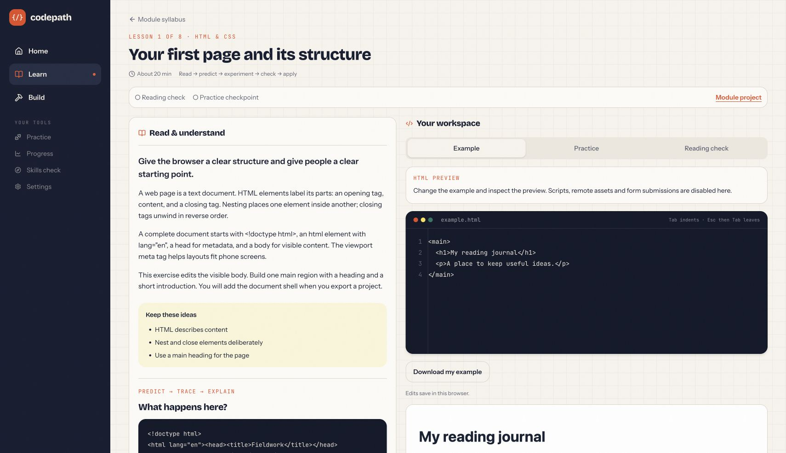

CODEPATH / PERSONAL APPLICATION
I taught myself a lot of code by using Codepath—and by coding Codepath.

CODEPATH / LEARNING APPLICATION
Codepath brings lessons, coding activities, feedback, and a Project Studio together. You can read about something, try it, and start building a website of your own.
THE LEARNING LOOP
Try changing the heading in HTML or the color in CSS. The preview updates as you type.
YOUR PREVIEW
BUILDING A TOOL TO LEARN WITH
Using the app helped me learn, and building it gave me more problems to figure out. That combination is what I like most about this project.
When you change your code, the old check result is marked out of date. You can run the check again to get feedback on the version you’re working on.
Drafts and progress save in this browser. The preview supports a limited set of features, and exported projects can run separately.
TOOLS
React · TypeScript · Vite · IndexedDB
Personal learning project. Progress stays in the browser you’re using.